화면에서 숨겨도 API는 다 보내요
진행자들이 처음 짚는 건 이 문서가 '화면에서 무엇을 숨길지'에 머물러 있다는 점이에요. 화면에서 민감한 데이터를 가리는 건 거실 창문에 블라인드만 치고 현관문은 열어 둔 것과 같다고 해요. 화면에 안 보여도 API 응답에는 남의 개인정보가 그대로 실려 있을 수 있거든요.
토큰이 유효한데 왜 뚫리나요
한 진행자가 반문해요. 게이트웨이에서 JWT(JSON Web Token)를 이미 검증했으면 검증된 사용자 아니냐고요. 답은 토큰 검증이 '안전한 통신 채널'을 확보하는 데 그친다는 거예요. 암호화된 터널을 뚫어 놓고 터널 안에서는 무엇이든 하게 두면, 공격을 암호화해서 안전하게 배달해 주는 꼴이 돼요.
토큰을 검증하는 건 단지 안전한 통신 채널을 확보하는 것에 불과하거든요.
— 영상 01:07
로그인했다는 사실(인증)과 이 데이터를 볼 자격(인가)은 다른 문제예요. 정상 토큰을 가진 공격자가 요청 속 고유 번호만 바꿔 남의 데이터를 가져가는 게 BOLA예요. 응답에 필요 없는 속성까지 실려 나가는 건 BOPLA(Broken Object Property Level Authorization)고요. 아래 그림이 토큰만 확인하는 서버에서 벌어지는 일이에요.
슬라이드가 보여 주는 위협의 규모
문서 앞부분 슬라이드는 숫자 세 개로 시작해요. 왼쪽 카드는 지난 2년 안에 API 관련 데이터 유출을 겪은 조직이 57%인데 API 계층 공격 탐지율은 21%라고 적었어요. 가운데 카드는 2026년 주요 침해 사고 다섯 건 중 네 건이 경계망 돌파가 아니라 '이미 작동 중인 권한'을 남용했다고 해요. 오른쪽은 생성형 AI(Artificial Intelligence)를 통한 비정상 API 호출을 가장 심각한 위협(65%)으로 꼽아요.
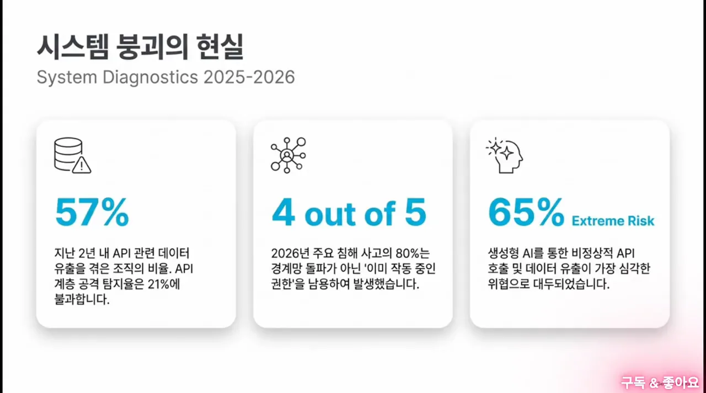
다음 슬라이드는 실제 사고를 세 칸으로 나눠요. 왼쪽은 Stripe(2025)의 섀도우 API, 가운데는 McDonald's / Paradox.ai와 VW(Volkswagen)의 BOLA, 오른쪽은 Intel과 Azure AD(Active Directory)의 과도한 데이터 노출이에요. 가운데 칸 설명이 BOLA를 한 줄로 요약해요. 신청 번호나 차대번호 같은 순차적 ID를 조작해 남의 권한에 접근했고, 원인은 사용자 인증과 데이터 인가를 나누지 못한 거라고요.
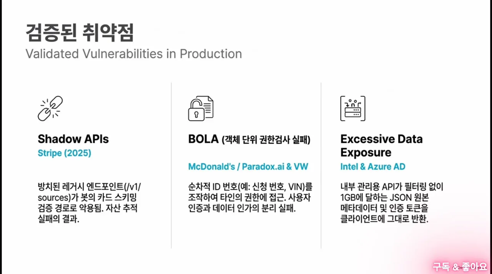
남의 데이터를 원천 차단하는 세 가지 장치
그럼 문서를 어떻게 고쳐야 할까요? 진행자들이 내놓는 답은 세 겹이에요. 번호를 추측할 수 없게 만들고, 소유권 확인을 개발자 손에서 빼서 시스템에 박고, 응답에 나갈 필드를 미리 정해 두는 거예요.
1. 순차 번호 대신 추측할 수 없는 ID
DB가 자동으로 매기는 1, 2, 3 같은 번호는 하나씩 올려 보기만 해도 다음 사람 데이터가 나와요. 그래서 UUID v4나 암호학적으로 만든 토큰형 식별자로 바꾸자고 해요. 무차별 대입으로 남의 ID를 맞히는 길이 막혀요.
슬라이드도 같은 위협을 AI 쪽에서 설명해요. 왼쪽의 엉킨 선이 오른쪽에서 분석·자동화·생성·반복의 고리로 정리되는 그림이에요. 아래 오른쪽 문장이 핵심이에요. '모두의창업' 사례처럼 매개변수를 순차적으로 바꾸는 자동화 스크립트를 AI가 바로 만들어 낸다는 거예요.
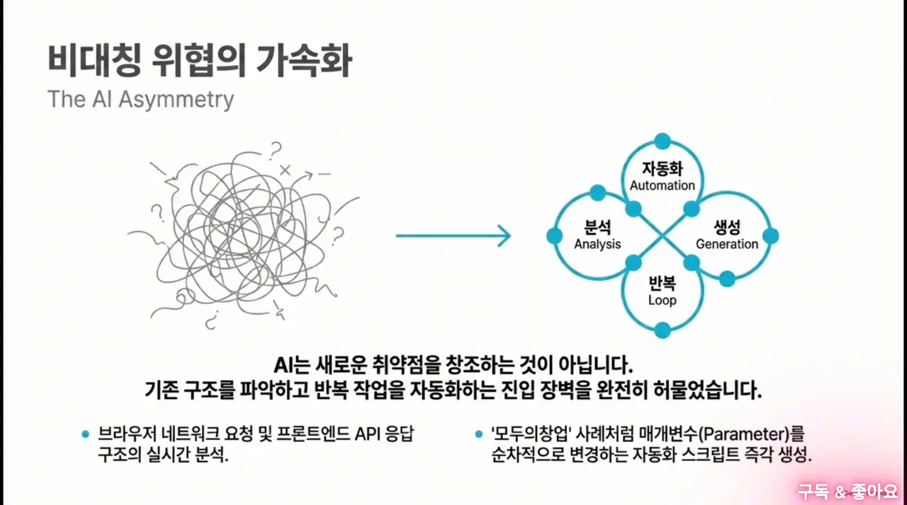
2. 소유권 확인을 시스템에 박는 공통 인터셉터
여기서 반론이 나와요. 번호를 바꿔도 개발자가 비즈니스 로직에서 소유권 검증을 빼먹는 실수는 못 막잖아요. 마감에 쫓기다 우연히 알게 된 남의 ID 조회를 그냥 통과시킬 수도 있고요. 진행자도 ID 교체만으로는 부족하다고 인정해요.
그래서 요청자의 세션 토큰과 조회 대상의 소유권을 SQL(Structured Query Language) 쿼리 수준에서 강제로 묶는 공통 인터셉터를 문서에 넣자고 해요. ORM(Object-Relational Mapping)이나 DB 접근 계층에서 조건이 자동으로 붙으니, 개발자가 잊어도 남의 데이터는 애초에 조회되지 않아요. 로직의 끝단이 아니라 가장 깊은 조회 단계에서 막는 거예요.
3. 내보낼 필드만 담는 DTO
ID가 안전해져도 SELECT *로 모든 컬럼을 가져와 그대로 던지면 여전히 위험해요. 그래서 외부 응답 전용 DTO를 의무로 만들자고 해요. 진행자는 '모두의창업'과 Intel 유출을 예로 들어요. 백엔드가 엔티티 객체를 그대로 직렬화해서 내부 메타데이터가 평문으로 다 나갔다는 거예요.
세 장치를 요청 하나의 흐름에 놓으면 이렇게 돼요.
슬라이드의 제로 트러스트 프레임워크도 같은 방향이에요. 왼쪽 첫 칸 '동적 권한 제어'에 ABAC(Attribute-Based Access Control)와 OPA를 적고, 그 효과로 'BOLA 차단 및 컨텍스트 기반 접근 제어'를 달았어요. 가운데 칸은 DPoP로 토큰 탈취를 막고, 오른쪽 칸은 Redis 기반 속도 제한으로 AI 스크래핑을 줄인다고 해요. 이 세 칸은 3장과 4장에서 다시 나와요.
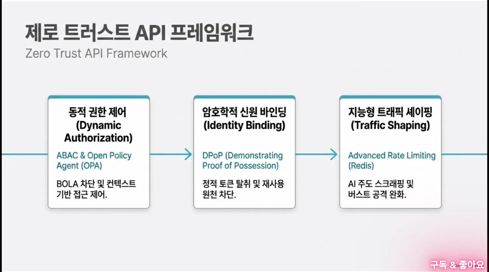
정상 토큰을 쥔 공격자는 어떻게 잡나요?
앞단을 다 막았다고 쳐도 남는 구멍이 있어요. 공격자가 피싱으로 사용자의 정상 자격 증명을 훔치면, 완벽하게 합법적인 형식으로 API를 불러요. 진행자는 문서의 탐지 전략이 트래픽 양이나 정해진 임계치를 감시하는 데 머물러 있어서 이런 공격을 못 막는다고 봐요.
방화벽이 통과시키는 공격
기존 웹 방화벽(WAF)은 요청 형식이 맞는지, 악성 페이로드가 있는지만 봐요. 토큰이 유효하고 요청이 깔끔하면 그냥 통과예요. 공격자는 그 틈에 조용히 데이터를 긁어 가거나 비즈니스 흐름 자체를 악용해요.
슬라이드의 '정적 토큰의 치명적 결함'이 이 상황을 그림으로 보여 줘요. 가운데 Bearer Token을 Attacker가 가로채 Server로 가져가고, 서버는 빨간 X로 무너져요. 아래 문장은 '토큰이 곧 권한'이라는 정적 논리가 문제라고 짚어요.
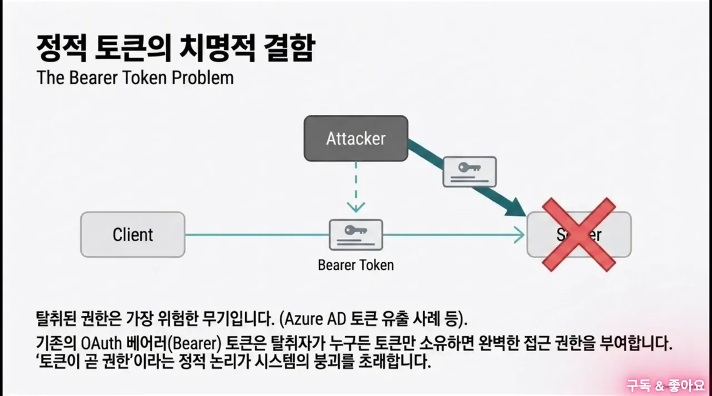
슬라이드는 여기에 DPoP로 답해요. 토큰을 클라이언트만 가진 개인 키에 묶어서, 토큰만 훔친 공격자가 오면 'Cryptographic Mismatch'로 막히는 그림이에요. 대화에서는 이 방법을 다루지 않고 행위 기반 탐지로 넘어가요.
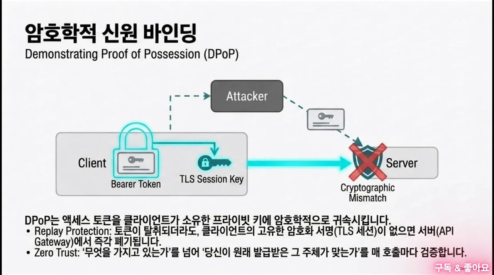
양이 아니라 순서를 보는 행위 기반 탐지
진행자의 처방은 머신러닝 이상탐지가 들어간 WAAP으로 실시간 행위 프로파일링을 하는 거예요. 다른 진행자가 한 걸음 더 나가요. '1분에 100번 불렀으니 차단'이 아니라, 이 사용자가 API를 어떤 순서로 부르는지 맥락을 읽자는 거예요. 아래 그림이 진행자가 든 예예요.
AI는 접속 IP, 세션, 토큰, 요청값의 변화폭과 함께 이 호출 순서를 실시간으로 보고, 이상한 흐름이 잡히면 바로 격리해요.
슬라이드는 같은 문제를 트래픽 쪽에서 풀어요. 왼쪽의 어지러운 'High-Volume AI Requests'가 WAF를 지나 'Advanced Rate Limiting'에서 가지런한 'Shaped Traffic'으로 바뀌는 그림이에요. 아래 문장은 정상 형식을 갖춘 AI 자동화 요청이 WAF의 시그니처 탐지를 쉽게 피한다고 적었어요.
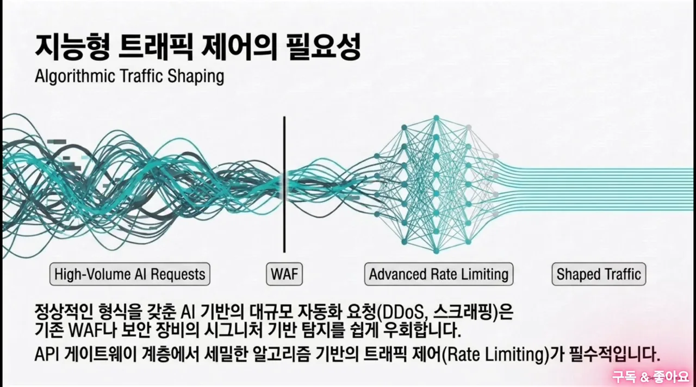
이어지는 슬라이드는 속도 제한 알고리즘 세 가지를 표로 비교해요. 글자가 작아서 내용을 옮겨 둘게요.
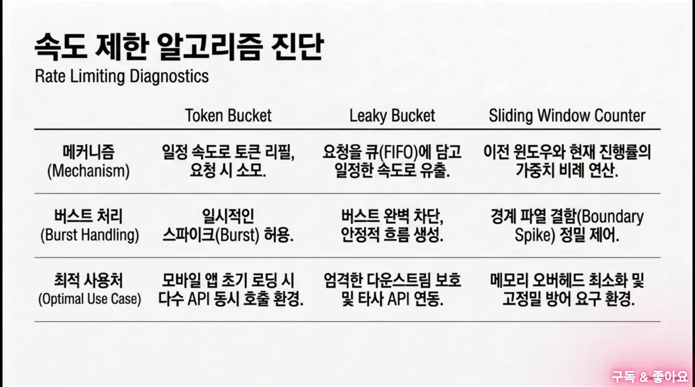
| 알고리즘 | 동작 | 버스트 처리 | 잘 맞는 곳 |
|---|---|---|---|
| Token Bucket | 일정 속도로 토큰을 채우고 요청마다 소모 | 잠깐의 스파이크는 허용 | 모바일 앱 첫 로딩처럼 API를 한꺼번에 부를 때 |
| Leaky Bucket | 요청을 큐(FIFO(First In, First Out))에 담아 일정 속도로 내보냄 | 버스트를 막고 흐름을 고르게 | 뒤쪽 시스템을 엄격히 보호하거나 외부 API와 연동할 때 |
| Sliding Window Counter | 이전 구간과 현재 진행률에 가중치를 둬 계산 | 구간 경계에서 몰리는 요청을 정밀하게 제어 | 메모리는 적게, 방어는 정밀하게 해야 할 때 |
너무 느린 공격에는 미끼를 둬요
다음 반론은 이래요. 공격자가 임계치 아래로 아주 느리게 긁어 가면 AI도 정상 사용자로 착각하지 않을까요? 오탐을 줄이려고 모델 민감도를 낮추면 결국 다 뚫리고요. 진행자는 AI의 수동적 감시를 보완할 능동적 함정, 허니 토큰을 꺼내요.
API 응답 안에 정상 사용자는 절대 쓸 일이 없는 가짜 객체 ID를 넣어 둬요. 화면에서는 CSS(Cascading Style Sheets)로 숨기거나 메타데이터 깊숙이 두니 일반 사용자는 누를 방법이 없어요. 번호를 차례로 대입하며 긁는 공격자만 결국 이 미끼를 물어요.
그런데 프론트엔드 개발자가 새 릴리스에서 실수로 미끼 ID를 부르는 버그를 만들면요? 우리 서버나 선량한 사용자가 공격자로 찍히는 오인 사격이 나요. 그래서 허니 토큰은 예외 처리와 한 묶음으로 설계해야 해요.
flowchart LR
A["미끼 ID 호출 발생"] --> B{"백엔드 내부망 또는 승인된 프론트엔드 IP 대역?"}
B -- "예" --> C["AI 탐지 페널티에서 제외"]
B -- "아니요" --> D["악성으로 간주하고 격리"]
숨은 API까지 찾고, 권한은 OPA에 맡기기
마지막 주제는 '모르는 API'예요. 하루에도 수십 번 배포가 일어나는 마이크로서비스 환경에서는 관리하는 API만 지켜서는 부족해요. 존재조차 모르는 섀도우 API와 버려진 좀비 API까지 통제해야 해요.
문서의 약점: 일회성 점검과 하드코딩된 권한
진행자는 문서의 API 점검 계획이 일회성·수동 검사에 머물러 있고, 권한을 동적으로 판정할 중앙집중형 인가 모델이 없다고 짚어요. 권한 관계를 소스 코드에 하드코딩하고 문서에 없는 API를 방치하면, CI(Continuous Integration)/CD 파이프라인의 속도를 보안이 못 따라가서 백도어가 생겨요. 진행자는 Stripe 레거시 API 공격을 그 예로 들어요. Swagger 같은 문서를 써도 코드가 병합되는 순간 낡아 버리고, 테스트용으로 잠깐 열어 둔 뒷문 하나가 시스템 전체를 무너뜨릴 수 있다고요.
찾기: 수동 분석과 능동 스캐닝을 함께
트래픽 분석이나 능동 스캐닝 중 하나만으로는 사각지대가 생겨요. 그래서 네트워크 트래픽을 관찰하는 수동적 분석과 소스 코드 스캐닝 같은 능동적 방식을 결합한 지속적 API 디스커버리를 만들자고 해요. 문서에 없거나 폐기된 좀비 API까지 실시간 인벤토리에 동기화하는 자동화 파이프라인이에요.
| 방식 | 무엇을 보나요 | 혼자 쓰면 |
|---|---|---|
| 수동적 분석 | 실제로 오가는 네트워크 트래픽 | 호출이 없는 API는 못 찾아요 |
| 능동적 방식 | 소스 코드 스캐닝 같은 직접 탐색 | 실제로 어떻게 쓰이는지는 못 봐요 |
'혼자 쓰면' 칸은 진행자가 말한 '사각지대'를 각 방식에 풀어 쓴 거예요. 슬라이드의 '진화하는 보안 거버넌스'는 이 과정을 원으로 그려요. 1 Discover(미관리 Shadow API 식별)에서 2 Test(CI/CD 파이프라인 안의 에이전트 검증), 3 Protect(WAAP 및 API Gateway 방어), 4 Analyze(데이터 레이크 분석)로 돌고 다시 처음으로 이어져요.
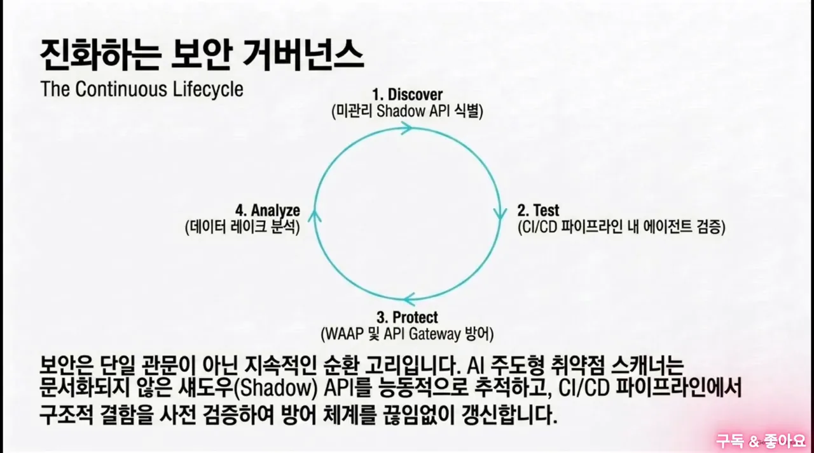
판정: 정책 기반 인가와 OPA
찾아낸 수많은 API의 권한은 어떻게 통제할까요? 서비스마다 언어도 프레임워크도 다르니 권한 로직을 일일이 심을 수는 없어요. 답은 정책 기반 인가, 곧 Policy as Code예요. OPA 같은 정책 엔진으로 속성 기반 접근 제어(ABAC)를 구현해서, 권한 통제를 비즈니스 로직과 완전히 떼어 내요.
한 진행자는 이걸 마이크로서비스들의 대법원에 빗대요. 각 서비스가 법을 해석할 필요 없이 사실관계만 넘기면, 엔진이 코드로 쓴 정책에 따라 허용이나 거부를 판결해요. 직급이나 역할만이 아니라 물리적 위치, 디바이스 보안 상태까지 따져요.
슬라이드는 ABAC를 세 가지 속성으로 정리해요. 왼쪽의 깨진 자물쇠 아래 'Role = Admin'은 역할 확인만으로는 BOLA를 못 막는다는 뜻이에요. 오른쪽 목록이 함께 따지는 속성이에요. Subject(요청자의 부서, 직급, 보안 등급), Resource(대상 데이터의 민감도, 소유자, 생성일), Environment(요청 시간, IP 위치, 디바이스 보안 상태)예요.
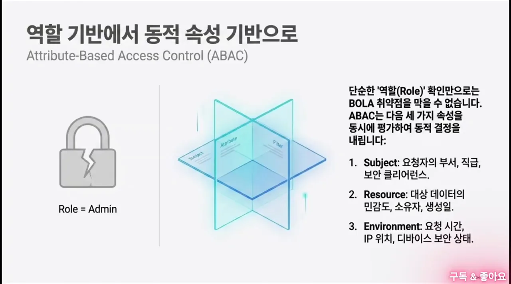
다음 두 슬라이드는 OPA가 어떻게 판정하는지 보여 줘요. 왼쪽 JSON Input이 Open Policy Agent로 들어가고, 안의 Rego Policies를 거쳐 Allow나 Deny가 나와요.
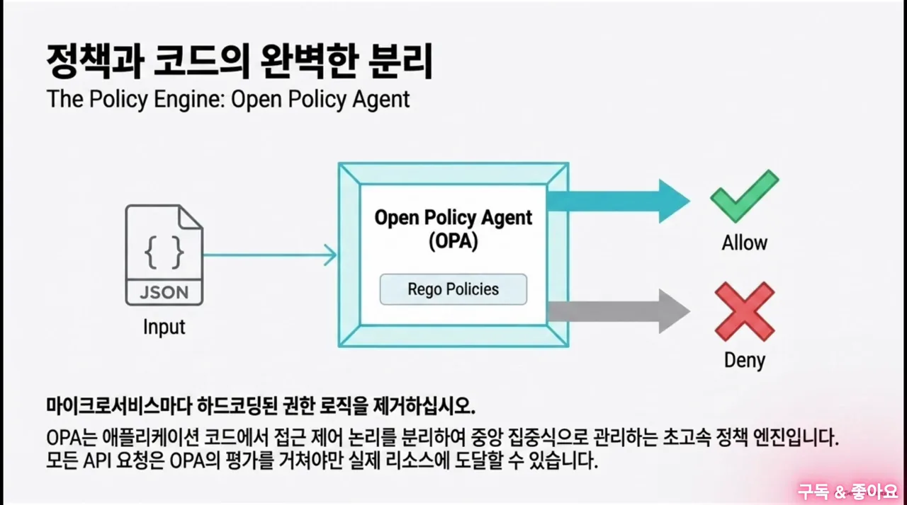
Rego 정책 예시는 '문서 소유자만 수정할 수 있다'는 규칙이에요. 기본값을 거부(default allow := false)로 두고, 수정 요청이면서 리소스 소유자가 요청자일 때만 허용해요.
package abac
default allow := false
# 문서 소유자만 수정(write) 가능
allow if {
input.action == "write"
input.resource.owner == input.user.id
}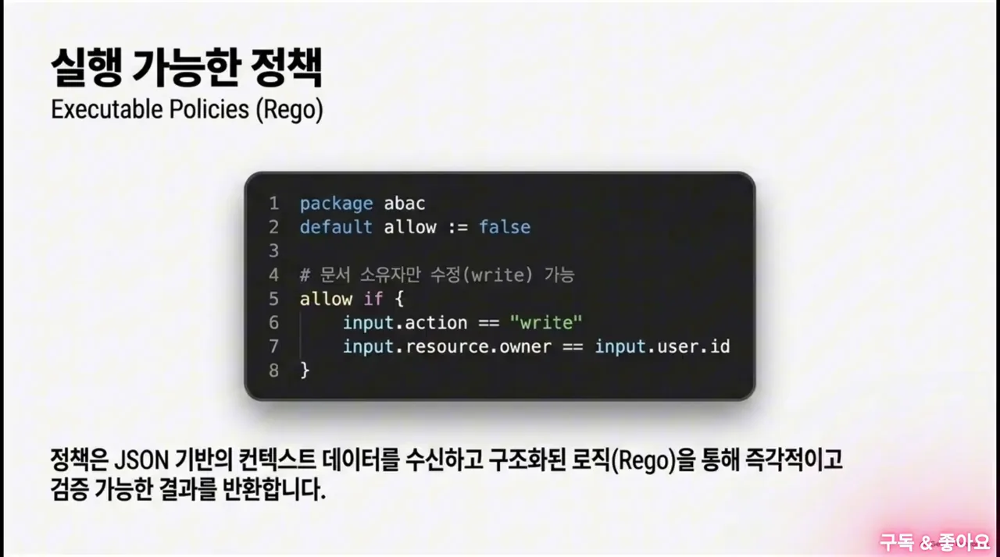
지연 걱정은 사이드카로
대법원 비유를 그대로 가져가면 문제가 생겨요. 수십 개 서비스가 통신할 때마다 외부 OPA에 승인을 받아야 하니 네트워크 지연이 커지고, CI/CD 속도도 늦어질 수 있어요. 진행자의 답은 OPA를 중앙 서버 하나로 띄우지 말고, 각 마이크로서비스와 같은 노드에 사이드카로 붙이는 거예요.
세 가지 실행 계획
대담은 이렇게 정리하며 끝나요.
- UUID v4와 시스템 수준 SQL 바인딩 — BOLA를 원천에서 막아요.
- 정적 룰셋을 넘어선 실시간 행위 기반 AI 탐지 — 오인 사격을 막는 격리 설계(허용 목록)와 함께요.
- 이중 스캐닝 API 디스커버리와 사이드카 OPA — 숨은 API까지 찾고, 권한 통제를 한곳으로 모아요.
영상 끝에는 문서 전체를 한 장에 담은 인포그래픽이 나와요. 왼쪽에 위기 지표(99%, 95%, 4.99백만 달러), 가운데에 쿠팡·맥도날드·인텔·폭스바겐 침해 사례, 오른쪽 위에 OWASP API Top 10 2023의 BOLA, BOPLA, 부적절한 자산 관리, 오른쪽 아래에 4단계 방어 전략(API Discovery, 토큰 바인딩, Policy as Code, WAAP)이 있어요.
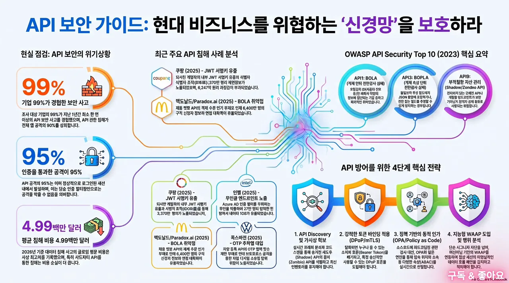